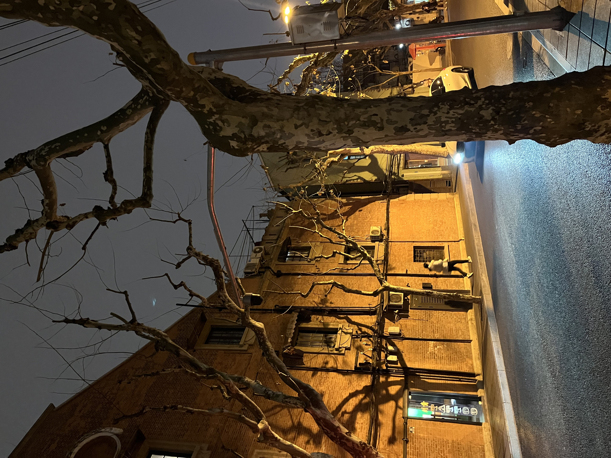
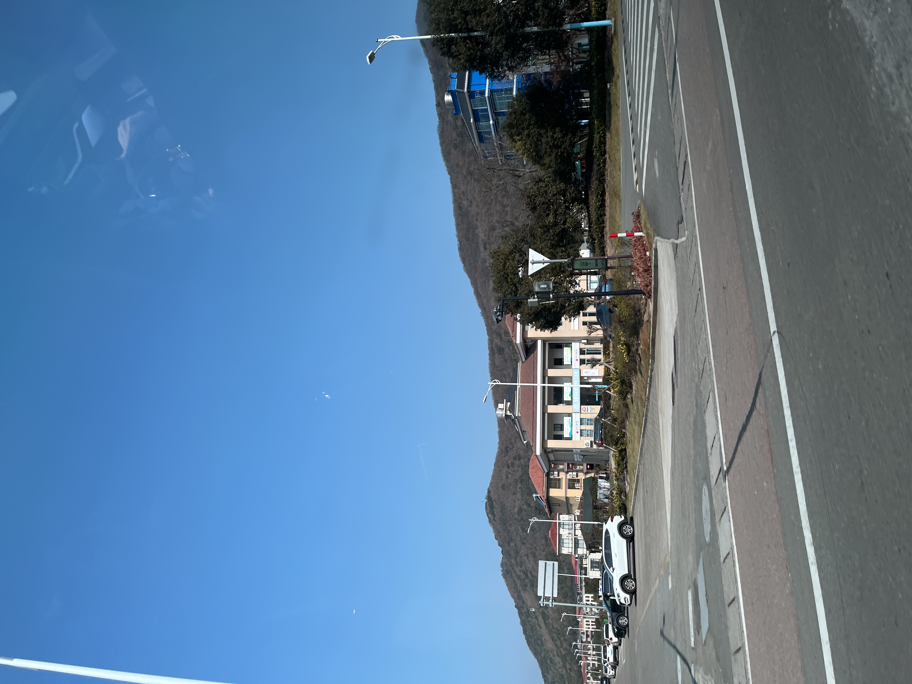
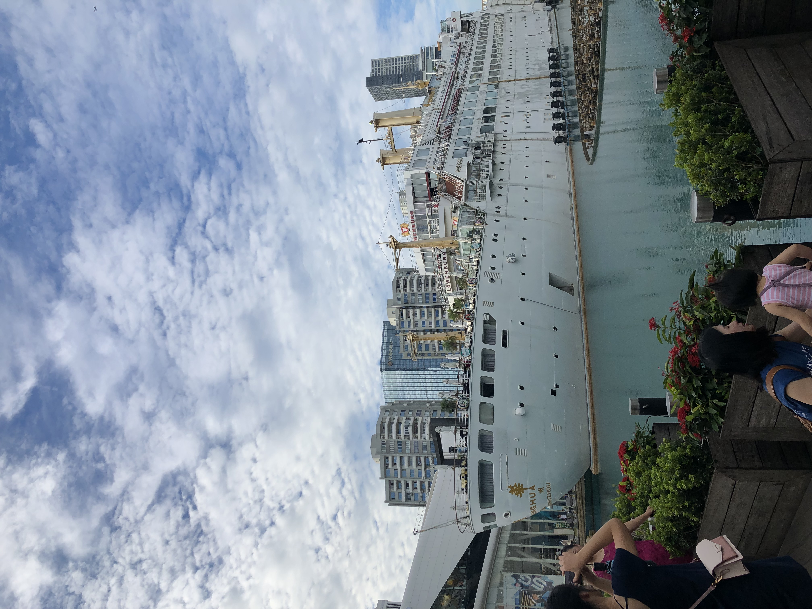

Travel to China🧳
Bucket List
Qingdao

Navigating the brightly lit city at night, the vibrant glow of neon signs and the rhythmic hum of urban life created a captivating and energizing atmosphere.
Shanghai
As I just mentioned, I love walking in brightly lit places at night. Shanghai had this older look which I appreciated because of the rich sense of history
Sanya

China has tropical places too! Sanya is latitudinally the same as northern Thailand or Vietname. A little island full of palm trees and beaches.
Zhoushan
My grandma is Buddhist so we went to Zhoushan, known for their mountains and Buddhist temples.
Yantai

This picture was taken in a fishing village where my grandpa is from. My mom spent the summers of her childhood here.
Shenzhen
Shenzhen is such a modern city with a newly developed look! They have Karaeoke booths and good Boba